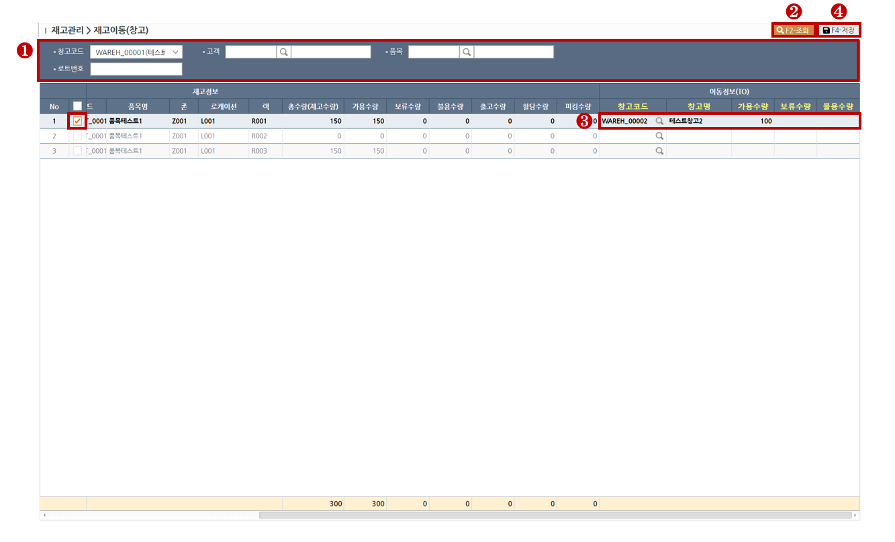
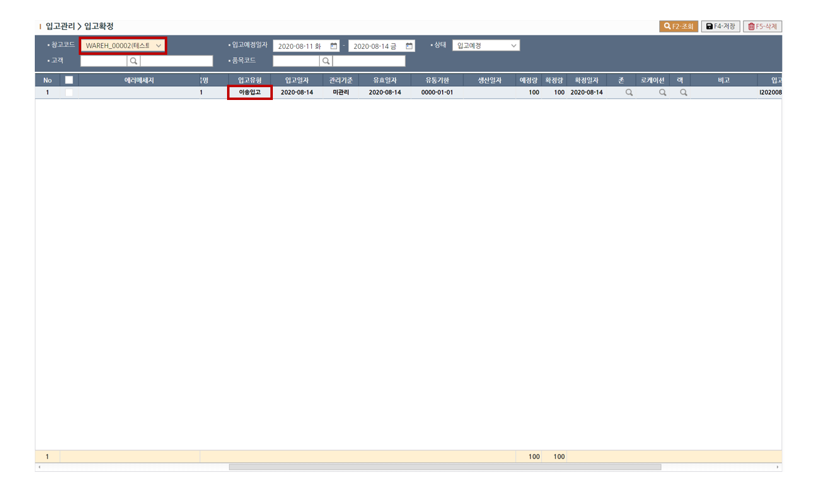

<div class="intro">
	<h2 class="az-content-title mg-b-20 tx-bold">재고이동하기</h2>
	<p class="mg-b-20">
	창고간 재고를 이동하는 화면입니다.<br>
	이동처리시 해당 창고에서는 입고예정정보로 처리됩니다.
	<br>
	</p>
</div>

<div id="rgb-stck3-content1">
	<div class="az-content-label mg-b-5">1. 재고이동하기</div>
	<small>
		<span class="tx-primary tx-bold"> > STEP-1</span> 조회목록의 필터링을 원하실땐 조회조건을 입력합니다. <br>
		<span class="tx-warning tx-bold"> > STEP-2</span> 상단의 조회(F2)버튼을 클릭하여 조회합니다. <br>
		<span class="tx-warning tx-bold"> > STEP-3</span> 재고이동하려는 행을 그리드에서 체크하고 노란색필드에 이동창고정보와 수량을 입력합니다. <br>
		<span class="tx-success tx-bold"> > STEP-4</span> 상단의 저장(F4)버튼을 클릭하여 저장합니다. <br>
	</small>
	
	<div class="mg-t-25">
    	
    </div>
    
    <div class="az-content-label mg-t-10">※ 에러체크사항 </div>
    <small> 
    	동일한 창고로는 이동이 불가합니다.<br>
    	현재 수량과 이동수량이 맞지 않는 경우 저장이 불가합니다.<br>
    </small>
    
    <div class="mg-t-20">
    </div>
    
    <small>
		<span class="tx-success tx-bold"> > STEP-X</span> [입고확정]화면에서 이동한 창고로 입고예정정보가 처리되었는지 확인합니다. 입고확정 방법은 동일합니다.<br>
	</small>
	<div class="mg-t-10">
    	
    </div>
</div>
